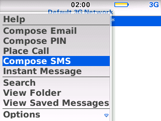
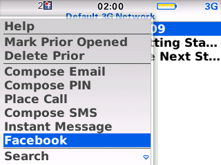

I’m continuing to make slow forward progress with my DAAP-based music player for the iPhone. My most recent changes have taken this in the direction of being much more like the standard music player functionality on the iPhone. In particular, I’ve switched over to using a tab view controller for the major perspectives of viewing the music database.
Read more…
Looking back to my last post
way back in October
it is pretty clear when things started getting crazy at work. The team survived and managed to finish another awesome version of
mFoundry’s
mBanking
product. These days I’m doing more management and less coding, but I’m definitely still a geek. Given that iPhone applications are all the rage in the industry, I’ve been trying to learn my way around iPhone development. During the process of learning, I’ve noticed a few things that have caught me off guard compared to Java. I hope to post a few of those things in the days and weeks to come that may help other Java programmers. In the meantime, I thought I would share some about the project I’ve been playing with to learn.
Read more…
Given
Motorola’s push into the Android space
, it comes as no surprise that they are trimming down the number of developers on the Eclipse Mobile Tools for Java project. MTJ project lead, Christian Kurzke,
announced via the mailing list
that three of the key “Motorola sponsored” developers have been reassigned to a different project and will no longer be sponsored to develop the Eclipse MTJ features. The good news is that Gustavo, Diego and David have expressed interest in continuing to be involved as individual contributors. In addition, Jon Deardon from Research In Motion will most likely be joining the list of official contributors very soon.
As Christian pointed out via his email, now would be an excellent time to consider getting involved in the Eclipse MTJ project. Even something as simple as being involved on the mailing list can help us out. If you are a mobile developer using Eclipse Mobile Tools for Java, consider contributing a patch to provide a cool new feature or to fix the bug that annoys you the most. Not a developer, but still want to contribute? We can always use help with documentation and project marketing. Pitch in and lend a hand!
I have just made available the first public release (version 0.5.0) of the
ZBerry
interactive fiction application. This release works pretty well, but is definitely rough around the edges. I hope people get some amusement despite any bugs. More details about installation and usage can be found on the
ZBerry Documentation page
.
Please take this for what it is worth… a silly little hobby project of mine that may or may not continue. If you really like this, feel free to comment. If you find bugs, source code patches are welcome, but complaints are not. My hope is that is that it is worth more than its price
(FREE)
but given that I’m making nothing from this I hope that everyone can understand there is absolutely no support implied or available.
I have been told that the
replacement Macintosh BlackBerry PPPD
is no longer necessary for systems that have Snow Leopard installed. In fact, it sounds like installing the patched pppd version can actually cause issues on Snow Leopard systems.
If you have Snow Leopard on your system, please do not install the patched version of PPPD.
I will keep the replacement package available for those like myself that are still running Leopard on their systems. In addition, there is a
version built for Tiger
.
Eric Cloninger of Motorola has started the process of combining Eclipse Mobile Tools for Java, Eclipse Tools for Mobile Linux and Eclipse Pulsar projects under one combined project. Although the specific name has not been decided yet, a leading candidate is simply the “Eclipse Mobile Tools” project. In Eric’s
presentation
to members of the various projects he mentions a number of compelling reasons for pulling these projects together:
Read more…
Just a quick post to validate that the latest Leopard update (10.5.8) overwrites the changed pppd provided by my
replacement package
. I’ve also verified that installing the
replacement package
on top of 10.5.8 works just fine.
In my
last post
, I was pretty negative about the available BlackBerry user interface controls. While that fact hasn’t changed, I didn’t want to leave the impression that the BlackBerry API’s provide nothing to developers. The API’s provide lots of interesting functions including the ability to extend menus within other applications. Take a look at the following from the default messaging application on a 4.5 device.

Before Facebook Installation
This shows the menu in this application before installing the Facebook application. After installation, you can see that the Facebook application has added a new menu item to this application.

After Facebook Installation
This is a pretty nice feature of the API. Although I don’t have actual code to show for this, my assumption is that this is provided by using:
API’s like this allow for incredible integration with the rest of the applications on the device, opening up many very interesting opportunities.
I continue to be impressed with the build quality and overall polish of the BlackBerry Bold as an end-user device… at least for basic functionality. While some may not like the way BlackBerry push email works, I find it to be pretty nice.
As a developer, I’m much more disappointed developing using the BlackBerry native API than I expected I would be when I started playing with my little ZBerry project. Marcus Watkins
offers excellent insight into the world of BlackBerry development
, which I won’t try to rehash here. The part that I find incredibly frustrating is the lack of decent reusable user interface controls. As Marcus details in his blog post, the provided UI functionality has the bland look and feel of the base operating system. Even more frustrating to me is how little flexibility there is even within the standard controls. For instance, I wanted to provide the user the ability to customize the font used in the text display. Using the standard functionality yields the following dialog.
Read more…
Along with the
Galileo Release of the Eclipse projects
, the first early look at the
Eclipse Pulsar
project was released. The
Eclipse Packaging Project
provides a
packaged version of the Pulsar project
along with the 1.0 version of the Eclipse Mobile Tools for Java project.
Read more…
{kind=link}
{kind=link}
{kind=link}